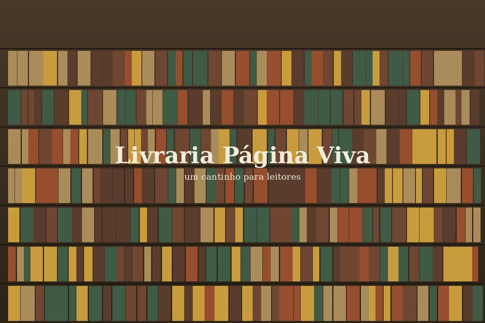

Ficção nacional e internacional
Romances, contos e novelas — de autores estreantes a nomes consagrados.
Um cantinho para quem gosta de ler devagar

Desde 2011, a Página Viva é uma livraria de bairro em São Paulo que aposta em curadoria: cada título nas nossas mesas foi lido por alguém da equipe antes de chegar até você. Aqui você encontra desde o lançamento mais comentado da semana até aquele clássico que sempre ficou para depois.
Abrimos de terça a domingo, sempre com café passado na hora e uma poltrona livre para experimentar o primeiro capítulo antes de decidir levar o livro para casa.
Romances, contos e novelas — de autores estreantes a nomes consagrados.
Um cantinho baixinho, com almofadas, para os leitores mais novos escolherem sozinhos.
Da poesia contemporânea brasileira aos ensaios que ajudam a entender o mundo.